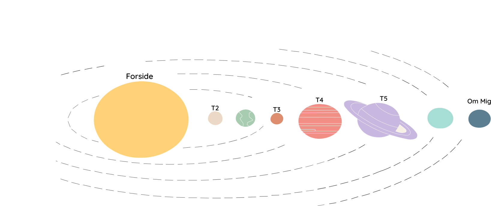
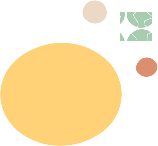

Portfolio Opgave


Dette er mit portfolie for første semester i multimediedesign. Her kan du udforske de opgaver og hjemmesider, jeg har skabt undervejs – fra grid og typografi til interaktive projekter med JavaScript og brugeroplevelse. Min tilgang til design er legende, æstetisk og meningsfuld. Jeg interesserer mig for naturen, bæredygtighed, poesi, og visuelle udtryk, og forsøger at forene teknik med følelse. Klik på planeterne eller brug menuen for at se mere.